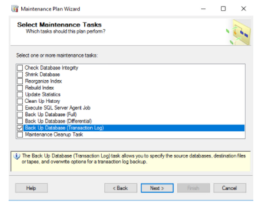

Overview of MS-SQL server database maintenance plans
Objective Outline guidance and approach of considerations to be given to database maintenance plans and how they may enhance your SQL environment
Disclaimer
This detail is provided as guidance only.
Changes made to your database maintenance plans and your regular backup regime are made at your own risk.
Test your policies on non-production databases first, before rolling out to your database estate at large.
The detail given here is for Microsoft SQL server. Although the procedures here may vary between alternate SQL and database formats the principles are essentially the same.
Where relevant, useful detail on considerations for Oracle Systems has been included.
What are maintenance plans?
Maintenance plans are essentially a workflow of the tasks required to make sure that your database is optimised, regularly backed up, and free of inconsistencies.
The maintenance plan wizard (accessible from the SQL management studio) allows you to create core maintenance plans that are recommended to be carried out on a regular basis, but you can also create plans manually. This gives you the flexibility to do what you want if it is not a series of typical maintenance tasks.
Popular maintenance plans are centred around localised backups and integrity checks.
By using maintenance plans you will: - Keep your databases healthy - Reduce your chances of data corrupting, which would require a recovery (which in turn costs you downtime)
How to create a maintenance plan
Creating a maintenance plan for the databases is carried out using SQL management studio.
You can create plans for databases that you may wish to group together, or create individual ones if so desired.
This document is based around using the maintenance plan wizard to create plans.
- Open the SQL Management Studio
- On the Management tab
- R-Click ‘Maintenance Plans’ and select ‘Maintenance Plan Wizard’
- Name it logically, and set the schedule as decided (Schedules can be changed as required)
- Select the required parts of the plan
- Customise to your requirements (including the schedule on which to run)
- Save the plan.
Maintenance plan wizard tasks
There are several predefined tasks in the wizard (mostly self explanatory):
Check database Integrity
Shrink Database
Reorganise Index
Rebuild Index
Update Statistics
Clean Up History
Execute SQL Server Agent Job
Back Up Database (Full)
Back Up Database (Incremental)
Back Up Database (Transaction Log)
Maintenance Cleanup Task
Ref: https://docs.microsoft.com/en-us/sql/relational-databases/maintenance-plans/use-the-maintenance-plan-wizard?view=sql-server-ver15

But what do they do?
Check Database Integrity - This task ensures that any integrity problems with the database are reported, thereby allowing them to be addressed later by a system administrator or database owner
Shrink Database - This task attempts to reduce the size of the selected database(s)
Reorganise Index - This task moving attempts to move index pages into a more efficient search order. - Carrying out this task will improve the database performance, particularly if the data has changed a lot over the time since it was last ran
Rebuild Index - This task rebuilds the index pages, making them more efficient. As with reorganising the index this may give you performance gains
Update Statistics - This task defines the table and index statistics that will be updated
Clean Up History - Use this task to define the database or databases where you want to discard old task history.
Execute SQL Server Agent Job - This task allows the plan to execute one (or many) of the stored procedures via the SQL Server Agent via EXEC sp_start_job T-SQL command which you may require. Or indeed, procedures of your own.
Back Up Database (Full) - This initiates a full backup of a database or multiple databases locally on the SQL Server. If you use this to complement your regular backup schedule run it at different times. Refer to your backup configuration documentation.
Back Up Database (Incremental) - This initiates an incremental backup of a database or multiple databases locally on the SQL Server. This is a useful task to work with the above ‘Full’ Job if you have large databases with rapidly changing data, as it will reduce a backup time
Back Up Database (Transaction Log) - This initiates a backup of the transaction logs for a database or multiple databases locally on the SQL Server. Refer to the Transaction Log Backup documentation for further guidance.
Maintenance Cleanup Task - This task allows you to specify the types of files to delete as part of the maintenance plan, including text reports created by maintenance plans and database backup file. This is a task to run regularly to keep your database and file structure in a healthy state
Useful maintenance plan configurations
Full Backup with Maintenance Example Primary Benefit: Optimises your (selected) databases and backs them up
- Check Integrity
- Rebuild Index
- Update Statistics
- Backup (Full)
Cleanup Plan Example Primary Benefit: Keeps your (selected) databases in optimal condition - Check Integrity - Rebuild Index - Update Statistics - Maintenance Cleanup Task
Building a maintenance plan - Except for pure backup tasks (such as a transaction log backup), you will generally build up a maintenance plan up of a number of tasks. - Think about the order you wish to do them in and consider the best time for which to run them. - The tasks you wish to carry out are selected on the initial screen (as illustrated on the previous slide).
Oracle Maintenance Plans - For Oracle Systems, consider building a plan using some of the items detailed on the following slide:
The intention for Oracle maintenance plans are exactly the same as for SQL databases, providing the same benefits.
The commands may be slightly different, but the activities are basically the same as for MS-SQL.
They ensure your database is optimised, regularly backed up, and free of inconsistencies.
Refer to specific guidance for your version of Oracle and consult with your support organisation to see how you can improve on the maintenance plans which may already be in place. Oracle have a lot of detail in their online administration guides :
https://docs.oracle.com/cd/B28359_01/server.111/b28310/tasks.htm#BABJIJFC
Oracle maintenance plans
Popular Oracle DB maintenance areas are: Database integrity - DBVERIFY and ANALYZE VALIDATE History cleanup - Manage the history of backups and logs Indexes - Rebuild indexes and reorganise tables Statistics - Gather Object and system statistics
Testing a maintenance plan - Although you will have tested your plan at the point of creation, periodically you should review it is running correctly by reviewing the status of your plans in the SSMS (SQL server management studio), and the log files viewable there within.